One-file domain-specific artists for plotlet — import plotlet.extensions.<name> registers the method, then c.<name>(...). Copy a module, swap your data, or register your own with pt.add_artist(...).
LOESS local-regression smoother via statsmodels lowess (degree 1 + robustifying iterations).
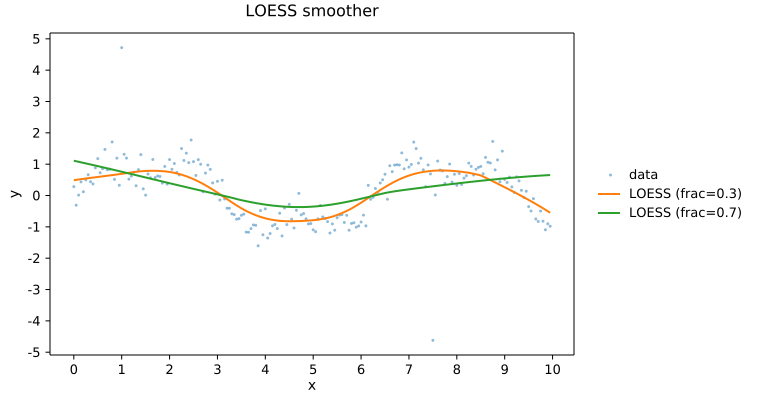
Horizontal dot at each category — Cleveland's perception-tested alternative to barh.
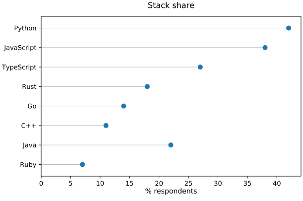
Categorical before/after: two dots connected by a line per row, color-coded by direction.
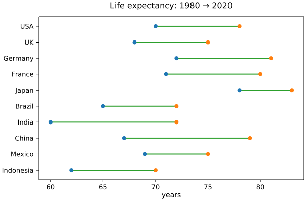
Data-anchored text via plotlet's bundled DejaVu Sans, on the foreground layer.
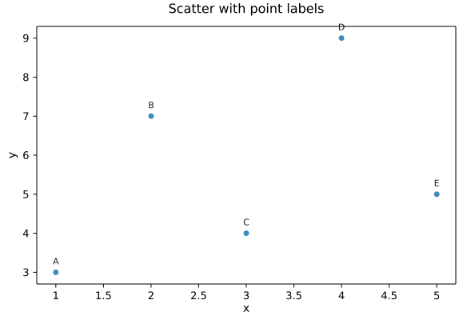
Agreement plot: (a + b) / 2 vs (a − b) with bias and ±1.96 SD limits.
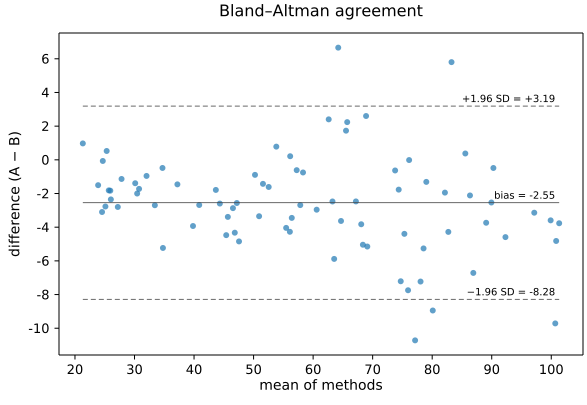
Letter-value plot (boxenplot): nested quantile boxes for big-sample distribution detail.
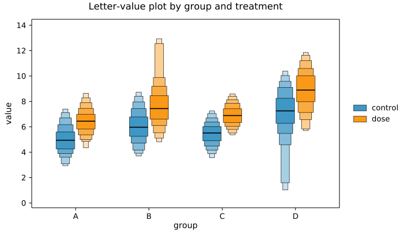
Half-violin + box + jittered strip per category — distribution shape, summary, and individual observations all readable at once.
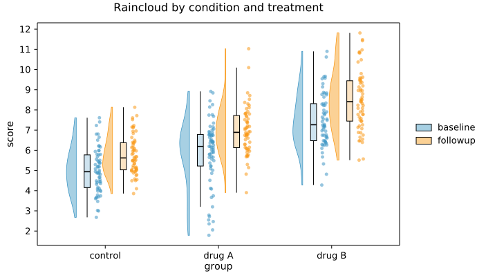
Split violin: left half group A, right half group B per category.
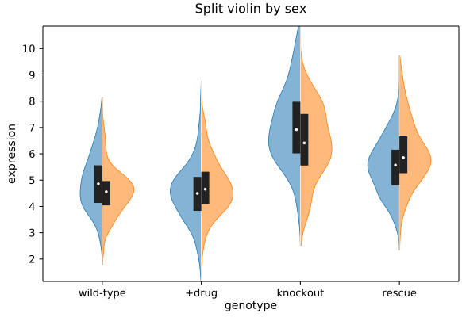
Three horizontal lines (lo / mid / hi) per category — clean summary overlay over strips/swarms.
view source →Scatter with marginal histograms on top and right — composition recipe.
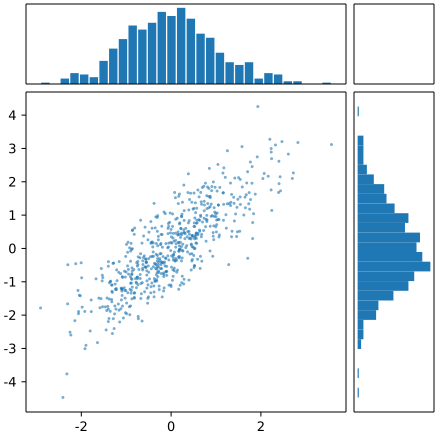
EDA pair-plot: n × n grid of scatter + histogram cells, built via plotlet `grid()` composition.
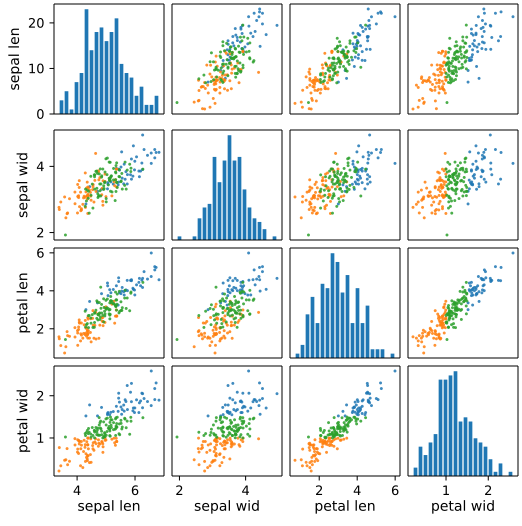
RNA-seq volcano: log₂-FC vs −log₁₀(p), colored by direction, with top-hit labels.
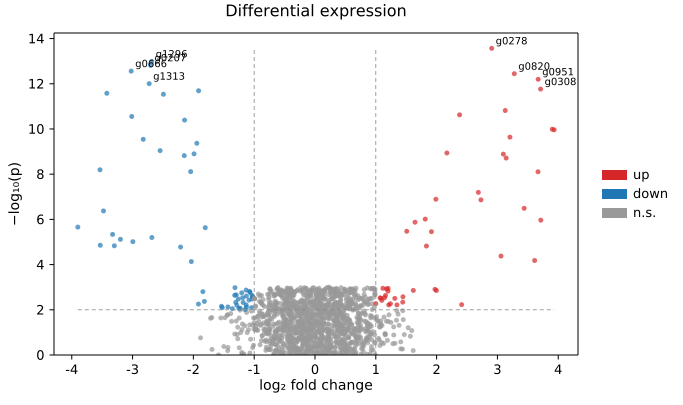
RNA-seq MA plot: log₂ fold change vs mean log expression, with significance thresholds.
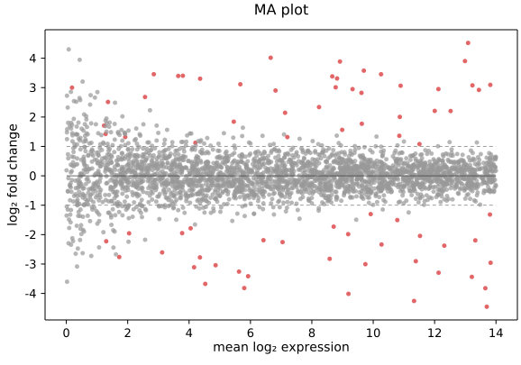
GWAS scatter of −log₁₀(p) vs cumulative genomic position, chromosomes alternated by color.
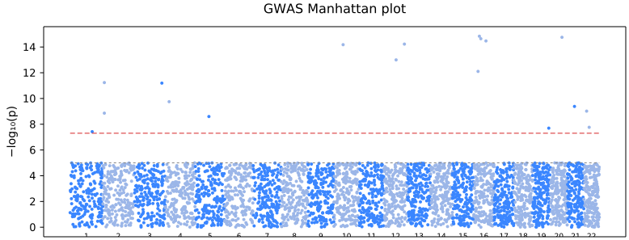
Categorical dot matrix encoding two values per cell (size + color).
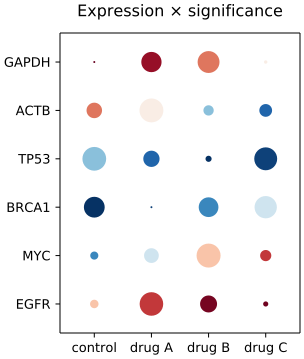
Contingency-table proportional rectangles: row × col area = joint count, splits show conditional rates.
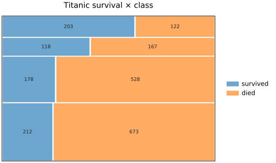
Kaplan-Meier survival + Greenwood CI band; log-rank helper for two-group comparison.
view source →Meta-analysis: per-study estimate + CI bar + square-by-weight, pooled diamond at the bottom.
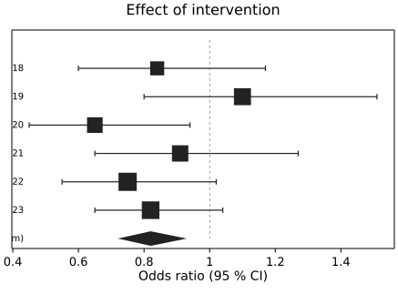
Meta-analysis funnel: effect vs standard error with ±1.96·SE envelope to spot publication bias.
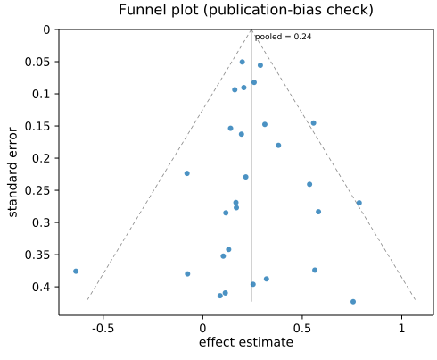
ROC curve with trapezoidal AUC computed inline and appended to the legend label.
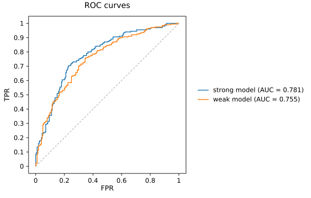
Precision-recall curve with trapezoidal AUPR; the imbalanced-classes twin of ROC.
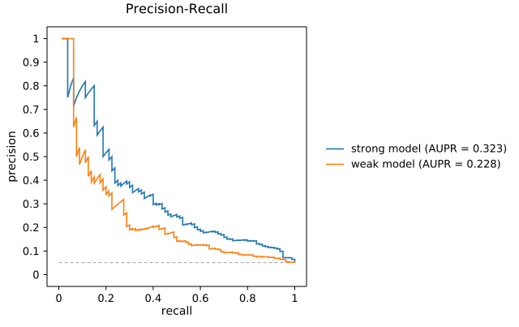
Classifier evaluation heatmap: counts (or row-normalized rates) of true vs predicted class.
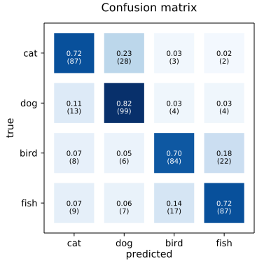
Reliability diagram: predicted vs observed probability in bins; diagonal = perfect calibration.
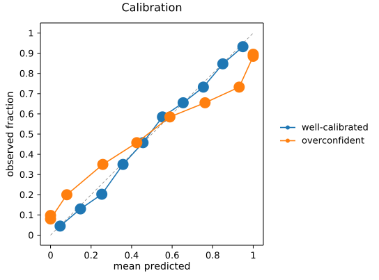
PCA biplot: PC1 vs PC2 scatter with loading arrows. SVD-based via numpy.
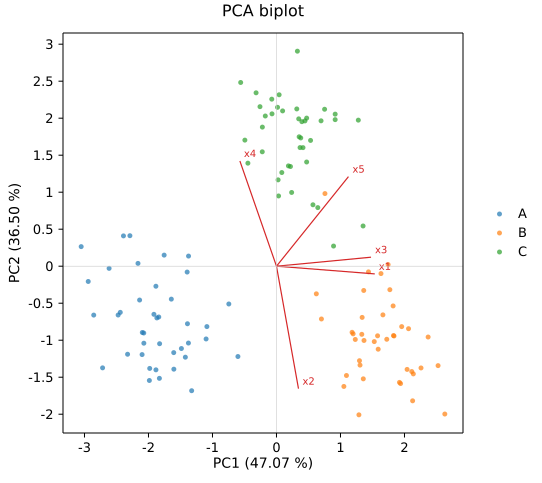
Multivariate EDA: vertical axes per variable, one polyline per row, normalized scales.
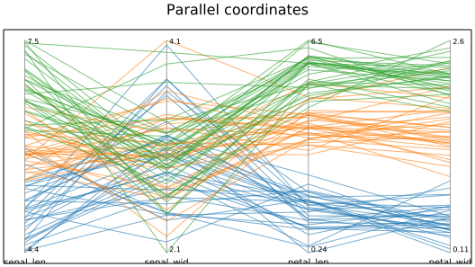
OLS diagnostic 4-panel (incl. Cook’s-distance contours) via scipy.stats.
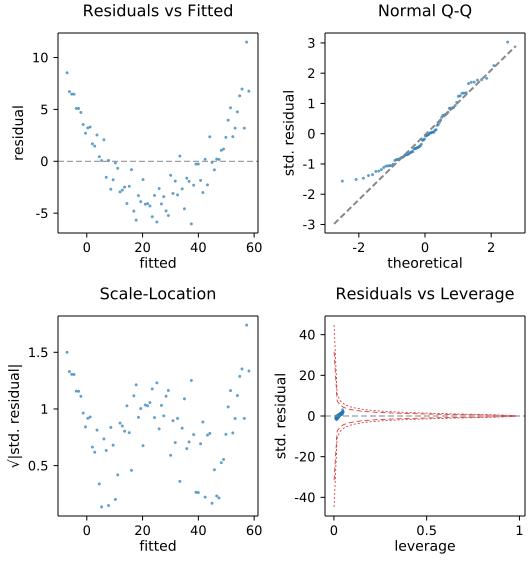
Paired before / after lines with end-point dots and optional row labels.
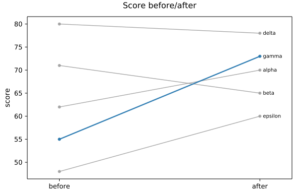
Ranked categorical lines over a sequence of periods (rank 1 at the top).
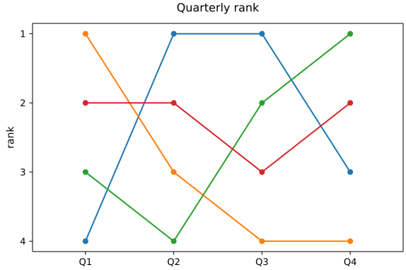
Successive ± contributions to a running total, with dashed connectors and final total bar.
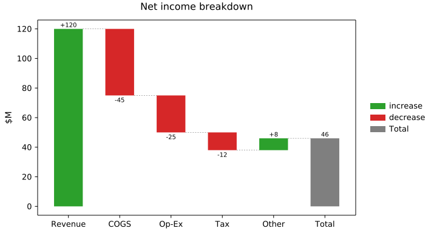
Conversion funnel: centered horizontal bars narrowing top-to-bottom with auto-percent labels.
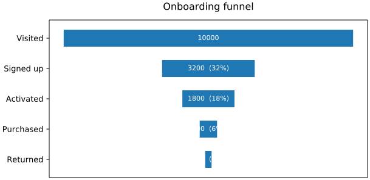
Likert / score-vs-baseline bars going left or right of zero, colored by sign.
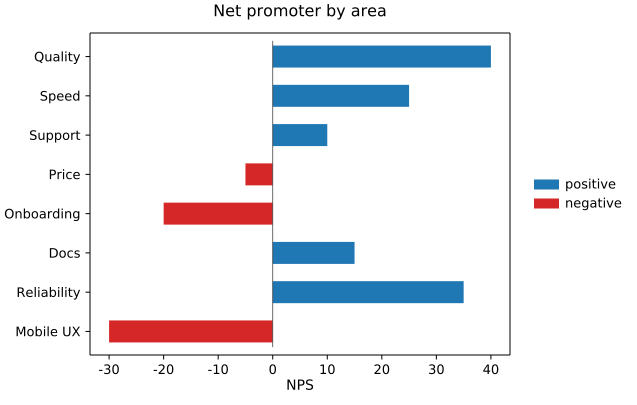
Population pyramid: paired horizontal bars mirrored around x = 0 (left vs right group).
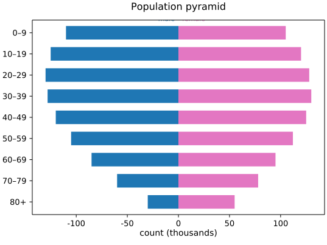
Stem-and-circle chart for sparse comparisons; optional mini-lollipop legend entry.
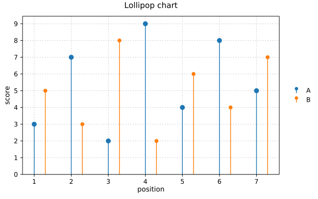
Vertical or horizontal tick marks per row, for spike rasters / event timelines.
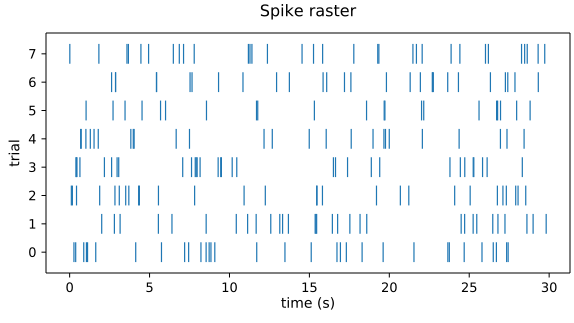
Banded compressed time-series strip; folds large y-ranges into N progressively-shaded layers.
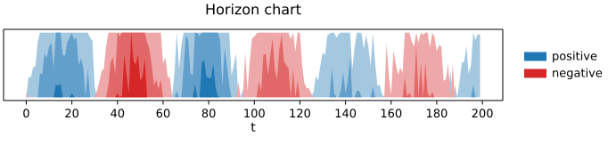
Intersection-size bars over a dot matrix (Venn replacement for 4+ sets).
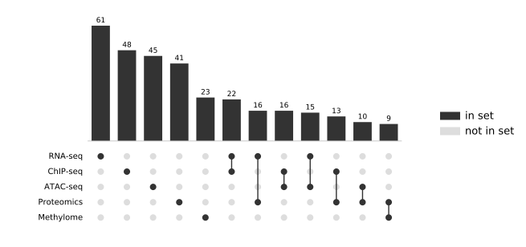
Flows between nodes drawn as cubic-bezier ribbons; layers inferred via longest-path layering.
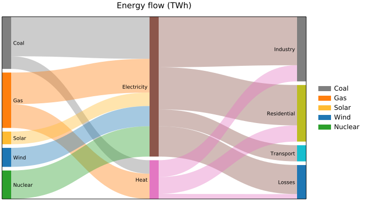
Categorical-state transitions over time: adjacent-layer flow ribbons (sankey for time series).
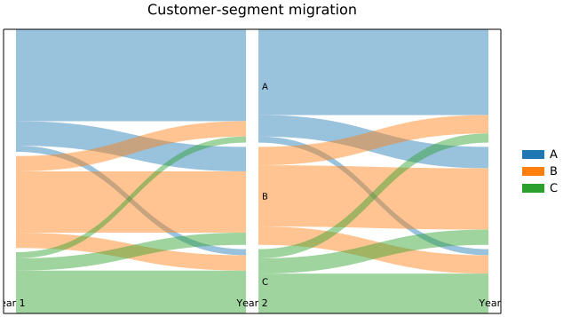
Significance brackets over a boxplot/violin: '*'/'**'/'ns' annotations with bracket lines.
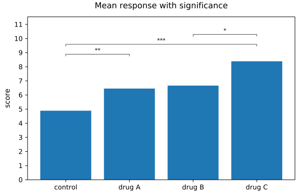